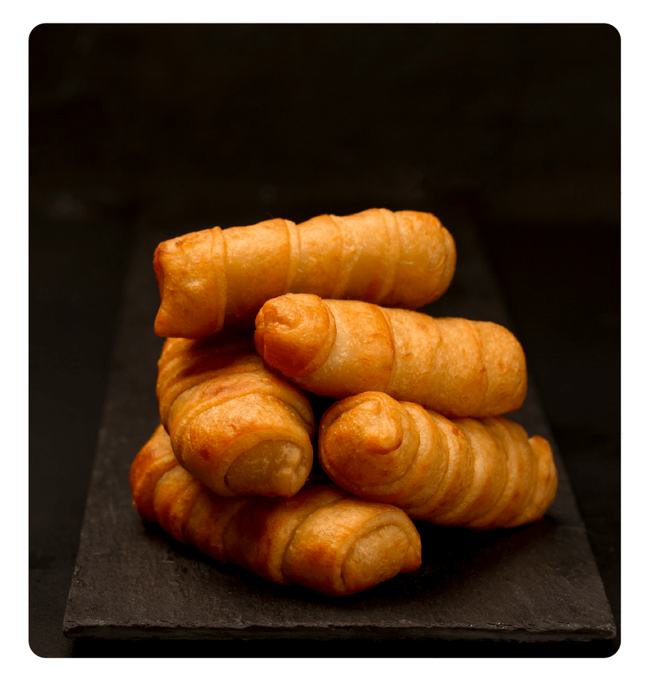

Tequeños de queso
Se cree que la receta nace de las sobras de masa de pasta hecha a mano de las cocineras que trabajaban internas con familias pudientes de Caracas y Los Teques; se tiene registros de haberse consumido en Caracas desde mediados del siglo XX. Se manejan dos hipótesis sobre su origen, la más difundida es que son originarios de Los Teques. Asimismo, se contempla su posible origen Caraqueño. Hay tequeños rellenos con queso y plátano maduro, dulce de leche, chocolate y dulce de guayaba.